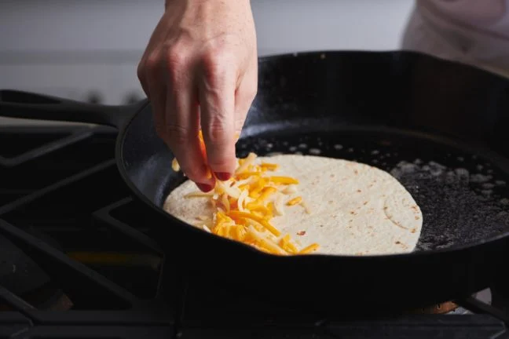
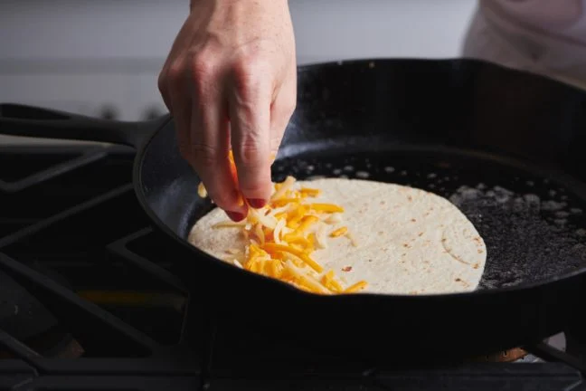

Tomato Basil Pasta
Origin: Italian Source:Bon Appetit Category: Main Dish
This recipe is a fantastic way to step up your pasta game without taking too much more of your time. It tastes way better than basic pasta with jarred sauce! I originally found this when my sister made it, and got the recipe off of Bon Appetit’s website. PS avoid using the shaker parmesan – I used that the first time I made this and it drew down the quality of the dish.
Recipe Ingredients:
- pasta
- tomatoes (any larger than cherry)
- basil
- red wine vinegar
- extra virgin olive oil
- crushed red pepper
- finely grated block of parmesan
Recipe Steps
- cut tomatoes along equator
- squeeze juice and seeds out of tomatoes and discard
- cut juiced tomatoes into small-ish pieces
- smush down with large spoon to release some leftover juices
- add in vinegar, olive oil, crushed red pepper and half of parmesan
- let marinate for half an hour
- add basil
- cook pasta
- toss marinade with cooked pasta and serve topped with remaining parmesan
Additional Food Images


Double Chocolate Cookies
Origin: Michigan Source: Family Recipe Category: Dessert
My daughter learned to make these cookies at a baking camp at Zingermanns and has tweaked the recipe to fit the taste buds of her siblings. They are extremely sugary so the salt helps to balance it. Note, these cookies are best eaten very quickly.
Recipe Ingredients
- Unsalted butter
- Granulated Sugar
- Packed light or dark brown sugar
- Large egg
- Pure vanilla extract
- Semi-sweet chocolate chunks (melted)
- All-purpose flour
- Natural unsweetened cocoa powder
- Baking soda
- Salt
- Semi-sweet chocolate chunks
Recipe Steps
- In a mixing bowl cream together the butter, granulated sugar, and brown sugar
- Add the egg and vanilla extract and beat well
- Add the melted chocolate
- In a separate bowl combine the flour, baking soda, cocoa powder and salt
- Combine the wet and dry ingredients
- Add the unmelted chocolate chunks.
- Form 15 cookies and place on a baking sheet.
- Cook for 12 to 13 minutes at 350 degrees.
Additional Food images


Dutch Baby Pancakes
Origin: Washington Source: self Category: Main Dish
An eggy sweet pancake. Tastes and smells like nutmeg and sugar. Rises with heat and falls elsewhere. Is essentially a giant crepe.
Recipe Ingredients
- ½ cup flour
- ¼ cup sugar
- ⅛ teaspoon nutmeg
- 3 eggs
- ⅔ cup milk
- ¼ oil
Recipe Steps
- preheat oven to 425 degrees
- Put pan in oven with the oil
- Mix dry ingredients.
- Mix eggs and milk
- Mix all together
- Let it sit for ten minutes
- Put in oven for 14 minutes
- Enjoy
Additional Food images


Chicken Quesadilla Recipe
Origin: Mexican Source: Well Plated Category: Main Dish
A plain cheese quesadilla of the white tortilla + prebagged cheese + microwave-until-melted variety can be made a bit of a joke when describing someone’s ability to “cook,” but this juicy chicken quesadilla is well-above basic.
Recipe Ingredients
- Chicken
- Cheese
- Veggies
- Spices
- Hot sauce
- Whole wheat tortilla
- Toppings
Recipe Steps
 


- Add the chicken to a bowl, then stir in half of the spices.
- Sauté the vegetables with spices.
- Assemble the quesadillas by piling the fillings onto one half of a tortilla.
- Fold the empty tortilla half over the top. Repeat.
- Cook the quesadillas two at a time in a skillet.
- Flip after about 4 minutes, cooking on the other side for a few minutes. Let cool, slice, and DIG IN!
Crunchwrap Supreme
Origin: Taco Bell (Fake Mexican) Source: Taco Bell Category: Comfort Food
Despite the noticeable price increase attributed to inflation, I'm an avid Taco Bell fan. There's an undeniable satisfaction in indulging in a Crunchwrap Supreme whenever hunger strikes. Fusing a traditional Mexican taco with a generously sized flattened burrito creates a symphony of flavors that resonates perfectly with my taste buds. The mere thought of it sets my stomach on a journey of anticipation, as each bite combines the comforting essence of familiar ingredients in a novel and exciting way. Yo quiero Taco Bell.
Recipe Ingdients:
- Tortilla
- Ground Beef
- Circular Taco Shell
- Cheese
- Lettuce
- Sour Cream
- Melted Cheese
- Diced Tomatoes
- Taco Bell Seasoning
- Cheese sauce
Recipe Steps:


- Make the ground beef with taco seasoning, season it well with spices and Taco Bell spices from Target
- Lay the tortilla on the grill and put cheese sauce on top of it, smooth it out in a circular motion, and be generous with the amount
- Next, put the circular crunch taco shell on top of it while adding a generous amount of sour cream on it, don't be shy!
- Next add your seasoned to ground beef onto the tortilla
- Finally, add your diced tomatoes, lettuce, and cheese.
- Wrap your Crunchwrap pentagon style and then grill it on a hot pan for about 4 minutes on medium heat, both sides
- Take it off the pan and then cut it in half and you have your Crunchwrap supreme